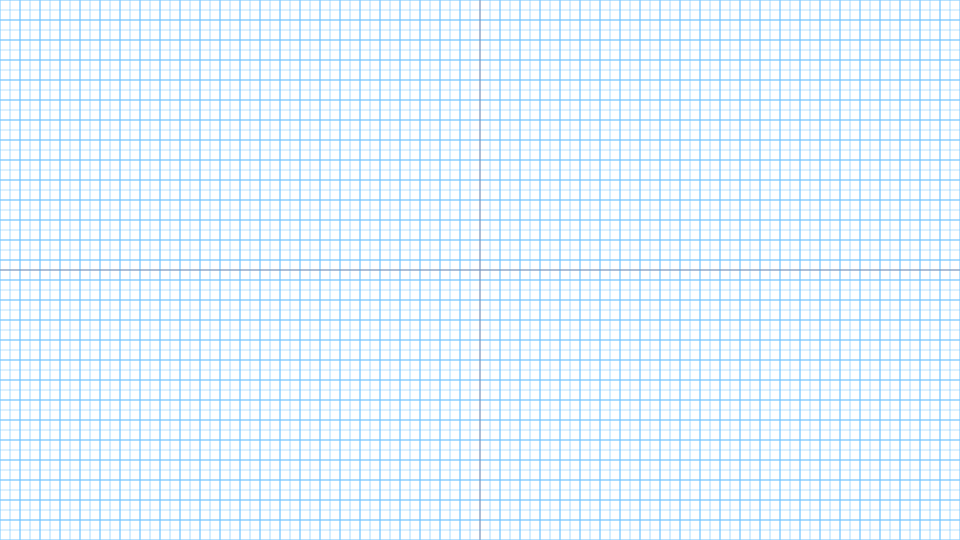

- Definition
-
Grid serves as the basis for laying out the components on screen. Grid allows for polished designs to be done in timely manner and systematic grid�consists of various layouts.
Samsung TV screens must apply the Samsung One grid system. This in turn allows for unity and objectivity to various TV UI layouts.
Moreover, the system will provide visual harmony and universal rules, even for screens with complex elements.
-
- Samsung One Grid
-
